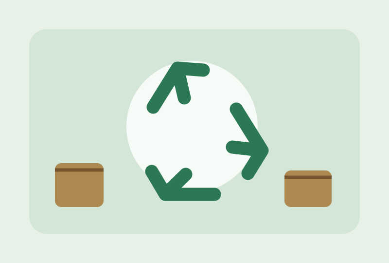

Sobre nosotros

Somos un equipo de estudiantes de Ingeniería de Sistemas de la Universidad del Valle que propone un sistema web para chatarrerías y centros de reciclaje.
Queremos contribuir a que los negocios organicen sus compras, ventas, precios e inventario, reduciendo el uso de registros manuales y facilitando la consulta de información.
Conoce nuestro equipoMateriales y precios
Vista informativa del cotizador planeado para la chatarrería.
| Material | Precio por kilogramo |
|---|---|
| Cobre | Por definir |
| Aluminio | Por definir |
| Hierro | Por definir |
| Plástico | Por definir |
Los valores se mostrarán cuando se implemente el módulo de actualización de tarifas. No son precios de mercado en tiempo real.